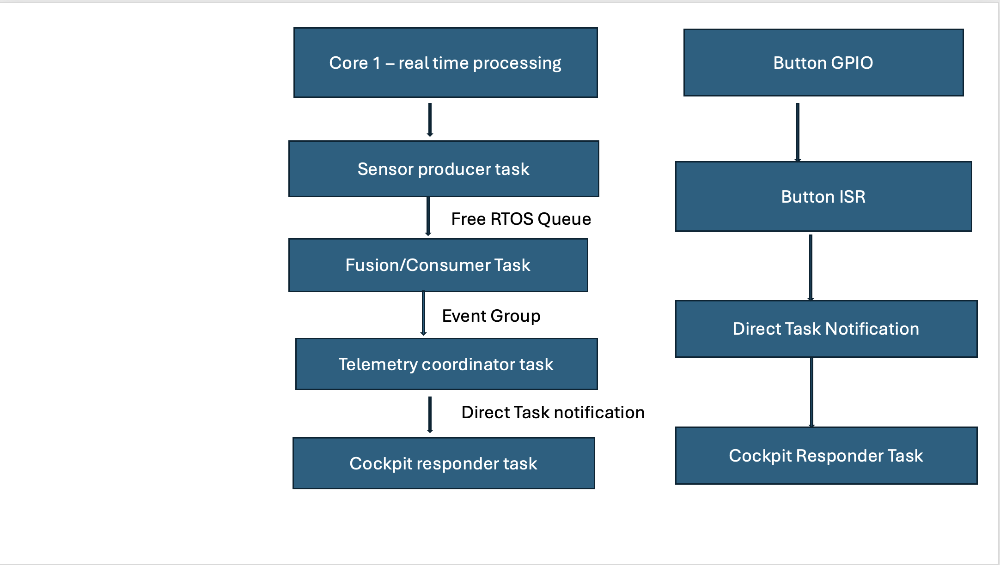
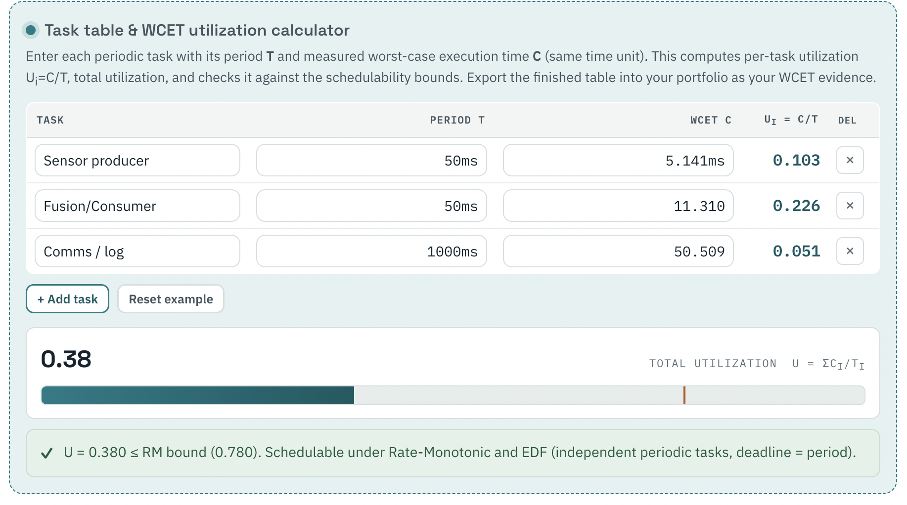
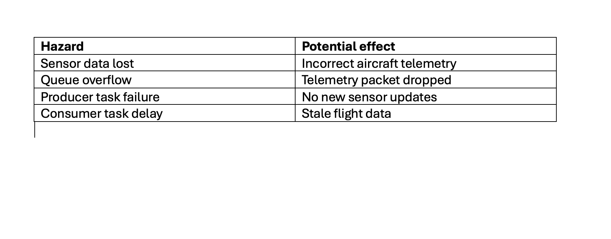

Project Overview
This project is the final capstone for my Real-Time Systems course. It demonstrates a dual-core FreeRTOS application running on an ESP32. The system models an avionics data-processing pipeline in which simulated sensor readings are generated, transferred, processed, coordinated, and reported through telemetry.
The application uses a FreeRTOS queue, event group, and direct task notification to support communication between concurrent tasks. Real-time pipeline tasks execute on Core 1, while system monitoring runs separately on Core 0.
The project also includes interrupt-driven operator input, queue back-pressure handling, task heartbeat monitoring, and a graceful degradation path that allows the system to continue operating when a telemetry packet cannot be accepted.
Key Features
- Dual-core ESP32 architecture
- FreeRTOS task scheduling
- Typed queue for avionics sensor packets
- Event-group synchronization
- Direct task notifications
- GPIO interrupt handling
- Per-task heartbeat monitoring
- Queue back-pressure and packet-drop handling
- Serial and web monitoring options
System Pipeline
The sensor producer creates simulated altitude data and places each packet into a FreeRTOS queue. The fusion task receives the packet, applies a simulated correction, and stores the latest processed result. Event-group bits indicate when production and processing are complete. The telemetry coordinator waits for both events and then notifies the cockpit responder task.
A separate monitoring task displays queue depth, event bits, task heartbeats, and the most recently processed avionics packet.
Target Role
This project is tailored toward Defense and Automotive Electrical Engineering roles. It emphasizes deterministic scheduling, interrupt handling, multicore task organization, system monitoring, timing evidence, fault containment, and continued operation under degraded conditions.
System Architecture Diagram

The system is organized as a producer-consumer pipeline. Sensor data is generated, processed, synchronized using event groups, and finally delivered through telemetry while a monitoring task executes independently on Core 0.
WCET Evidence

Worst-Case Execution Time (WCET) measurements were collected for the producer, consumer, and monitoring tasks. The measured utilization satisfies the Rate-Monotonic scheduling bound, demonstrating that the system is schedulable.
Hazard Analysis

The hazard analysis identifies possible failures, their effects on the telemetry system, and the mitigation strategies implemented to maintain safe operation.
Final Reflection
Read the complete reflection describing the lessons learned throughout the project:
View Final ReflectionRecruiter Information
- Embedded C
- ESP-IDF
- FreeRTOS
- Dual-Core Programming
- Queues
- Event Groups
- Direct Task Notifications
- WCET Analysis
- Fault-Tolerant Embedded Systems
- Embedded Debugging
This project demonstrates practical experience applicable to aerospace, defense, automotive, robotics, and industrial embedded software roles.